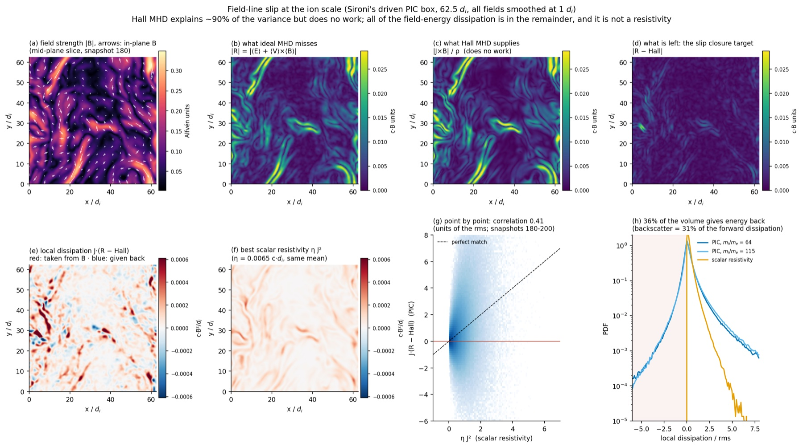
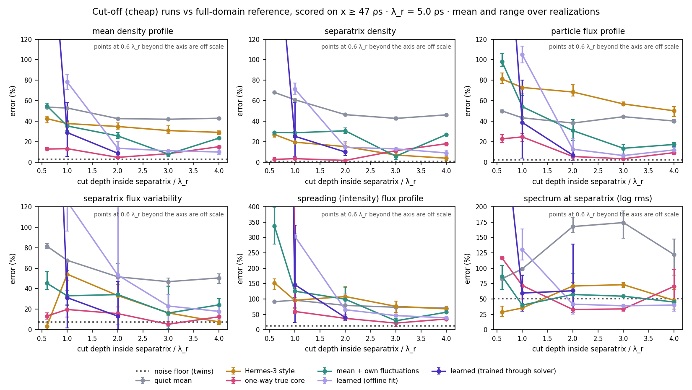

Every practical plasma simulation stitches models together: a fluid code where a kinetic one is too expensive, an edge code that stops where the core begins. The physics that crosses those seams is usually set by a convention. The idea here is one recipe for both: learn what crosses the seam, train it inside the solver, and know when it is wrong so the expensive model can be called. Two seams, two collaborators: Lorenzo Sironi's kinetic turbulence (astrophysics) and Ben Zhu's tokamak edge (fusion).
Top: astrophysical turbulence (collisionless, so a fluid code needs a closure for what the ions do). Bottom: a tokamak, where the core and the turbulent edge are simulated by different codes and the inner edge boundary is a convention. The double arrows are the point: the seam has to work in both directions.

An MHD code at ion scale needs the electric field the ideal law misses, R = ⟨E⟩ + ⟨V⟩×⟨B⟩ (all fields smoothed to one ion skin depth). The Hall term, which any fluid code can compute, explains about 90% of it (panels b, c). But the Hall term does no work. All of the field-energy dissipation is in the remainder (d, e), and about a third of the volume returns energy to the field (blue). A single resistivity can match the mean dissipation (η ≈ 0.0065 c·di, the same at mass ratios 64 and 115) but not where it happens (g, correlation 0.4) and never the backscatter (h). That remainder is the second closure we now train, from the same pretrained representation as the anisotropy closure. training queued

A published 2D edge/SOL turbulence model (Decristoforo et al. 2021), run over the full domain as the reference, then cut off at a depth inside the separatrix with different inner boundaries. Depth is measured in radial correlation lengths λr. The Hermes-3-style boundary (gold) is biased by 30–40% at every depth. Pasting in data from a separately evolving full run (pink) dephases the turbulence. A learned boundary (purple) is accurate from about 2 λr, and fails closer in unless it is trained through the solver.
| Inner boundary | 1 λr inside | 2 λr inside |
|---|---|---|
| Hermes-3 style (convention) | 58 | unstable late in the window |
| Learned, fitted offline | 75 | 7 |
| Learned, trained through the solver (3 training runs) | 3 · 14 · 46 | 12 · 15 |
| Noise floor | 4 | 4 |
Training the boundary inside the solver can reach the noise floor one correlation length from the separatrix, but only in one of three training runs, and a short validation loss does not tell you which. That is the same lesson as for the closures, and the reason for a trust gate. Next: the real thing, with a learned edge emulator coupled to the TORAX core code.
| Test set | sent by model disagreement | sent at random | perfect router (ceiling) |
|---|---|---|---|
| Bigger box, never seen | 0.33–0.35 | 0.48–0.49 | 0.20 |
| Real proton mass, never seen | 0.41 | 0.51 | 0.25 |
| Training-like data | 0.19 | 0.21 | 0.14 |
The disagreement of an ensemble of closures points at the right places, most of all where the data are unfamiliar. Its size is 2–6× too small, though: the truth falls inside the ±1 spread 12–19% of the time instead of 68%. Calibrating it so it can be read as a probability is the third piece of the plan.